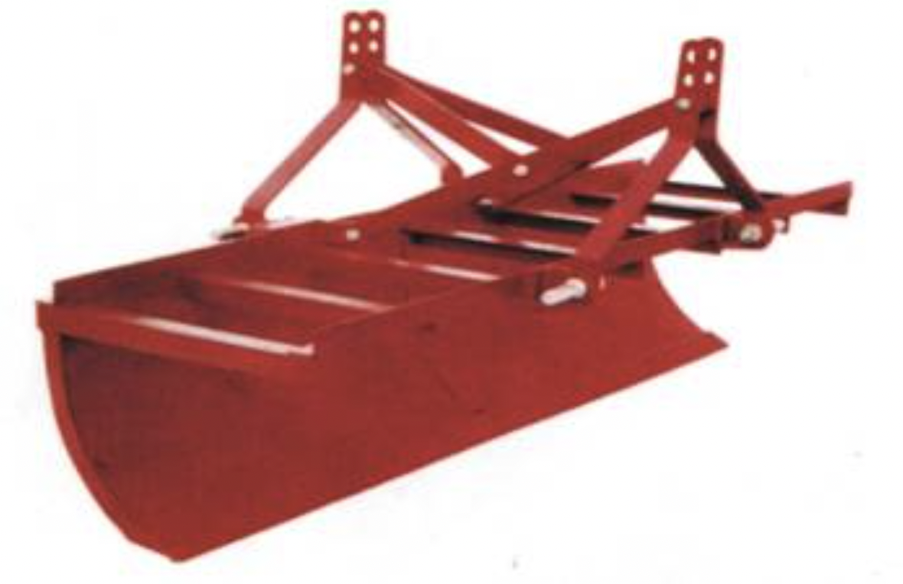

3.भूमि विकास उपकरण
- 3.1 ट्रैक्टर ड्रा लेवलर
- 3.2 लेजर गाइडेड लैंड लेवलर
- 3.3 सब-सॉइलर
3.1
nट्रैक्टर ड्रा लेवलर विशेषताएं
लेवलर में फ्रेम, 3-पॉइंट लिंकेज, कटिंग या स्क्रैपिंग ब्लेड, और मोटी घुमावदार शीट होती है जो एक बाल्टी बनाने के लिए पक्षों से बंद होती है। स्क्रैपिंग ब्लेड मध्यम कार्बन स्टील या कम मिश्र धातु इस्पात से बना है, कठोर और लगभग 42 एचआरसी तक टेम्पर्ड है। ब्लेड को फास्टनरों के साथ घुमावदार शीट से जोड़ा जाता है और खराब होने या सुस्त होने के बाद बदला जा सकता है। इंप्लीमेंट की कार्य गहराई ट्रैक्टर के हाइड्रोलिक सिस्टम द्वारा नियंत्रित होती है।
विशेष विवरण:
| लंबाई (मिमी) | : 1840 |
| चौड़ाई (मिमी) | : 700 |
| ऊंचाई (मिमी) ब्लेड का आकार (मिमी) |
: 700 |
| -लंबाई | : 1830 |
| चौड़ाई (मिमी) | : 75 |
| -मोटाई | : 8 |
| वजन (किग्रा) | : 90 |
| बिजली की आवश्यकता (एचपी/किलोवाट .) | : 35/26.25, ट्रैक्टर |
उपयोग:
खेतों को समतल करना और ढीली मिट्टी को एक स्थान से दूसरे स्थान तक खींचना या धकेलना।
लगभग लागत: रु 20,000
3.2 लेजर गाइडेड लैंड लेवलर

विशेषताएं
लेज़र लैंड लेवलर में एक लेज़र ट्रांसमीटर, एक लेज़र रिसीवर होता है, एक विद्युत नियंत्रण कक्ष, एक जुड़वां सोलनॉइड हाइड्रोलिक नियंत्रण वाल्व, दो पहिये और एक समतलन बाल्टी लेज़र ट्रांसमीटर एक लेज़र बीम ट्रांसमिट करता है, जिसे लेज़र रिसीवर द्वारा इंटरसेप्ट किया जाता है समतल बाल्टी पर घुड़सवार। ट्रैक्टर पर लगा कंट्रोल पैनल सिग्नल की व्याख्या करता है रिसीवर से और हाइड्रोलिक कंट्रोल वाल्व को खोलता या बंद करता है, जो बढ़ाता या घटाता है बाल्टी कुछ लेज़र ट्रांसमीटरों में से लेकर श्रेणीबद्ध ढलानों पर काम करने की क्षमता होती है 0.01% से 15% और खेत में दोहरी नियंत्रित ढलान लागू करें। समतल करने वाली बाल्टी या तो हो सकती है 3-पॉइंट लिंकेज ट्रैक्टर के ड्रॉबार द्वारा लगाया या खींचा जाता है। बाल्टी आयाम, पहियों की संख्या और क्षमता उपलब्ध शक्ति स्रोत और क्षेत्र की स्थितियों के अनुसार अलग-अलग होगी।
विशेष विवरण:
| लेजर स्रोत | : 5 मेगावाट 635 एनएम |
| ऑपरेटिंग व्यास (एम) | : (Above) 800 |
| ग्रेड रेंज (%) | : -10 से +15 दोहरी अक्ष |
| ग्रेड सटीकता (%) | : 0.015, 3 मिमी@30 वर्ग मीटर |
| रिमोट कंट्रोल प्रकार | : पूर्ण दोतरफा संचार |
| बिजली की आवश्यकता (एचपी/किलोवाट) | : 60/45 |
Uses:
इसका उपयोग एक या दोनों दिशाओं में भूमि के सटीक समतलन के लिए किया जाता है।
लगभग लागत: रु। 3,50,000
3.3 उप-मृदा
विशेषताएं
इसमें उच्च कार्बन स्टील से बने बीम होते हैं, बीम समर्थन जो पर निकला हुआ होता है कठोरता के लिए ऊपरी और निचले किनारों, खोखले स्टील एडेप्टर को बीम के निचले सिरे पर वेल्डेड किया जाता है, जिसमें स्क्वायर सेक्शन वाले शेयर बेस को समायोजित किया जाता है, उच्च कार्बन स्टील से बने शेयर प्लेट और सेट बोर्ड के लिए टांग ड्रिल और काउंटर बोर होता है जो एडेप्टर में आधार को सुरक्षित करता है। शेयर प्लेट उच्च कार्बन स्टील से बना है, कठोर और उपयुक्त कठोरता के लिए टेम्पर्ड है। दो सममित रूप से स्थित बोल्ट छेद शेयर की प्रतिवर्तीता की अनुमति देते हैं। की कार्य गहराई सब-सॉइलर को हाइड्रोलिक सिस्टम और ट्रैक्टर के लिंकेज द्वारा नियंत्रित किया जाता है |
विशेष विवरण:
| लंबाई (मिमी) | : 600 |
| चौड़ाई (मिमी) | : 490 |
| ऊंचाई (मिमी) | : 1325 |
| अधिकतम कार्य गहराई (मिमी) | : 535 |
| वजन (किग्रा) | : 62 |
| बिजली की आवश्यकता (एचपी/किलोवाट) | : 55/41.25, ट्रैक्टर |
उपयोग :
इसका उपयोग मिट्टी के सख्तपन को तोड़ने, मिट्टी को ढीला करने और जल निकासी में सुधार के लिए पानी को मिट्टी में रिसने में मदद करता है। मिट्टी में एक छोटी सुरंग बनाने के लिए एक मोल बॉल लगाया जा सकता है, जो पानी के लिए जल निकासी चैनल के रूप में कार्य करता है।